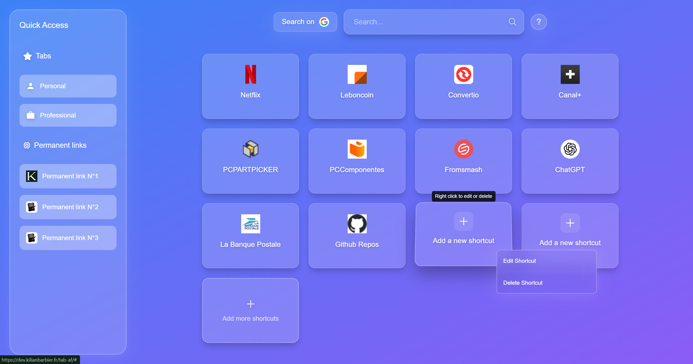
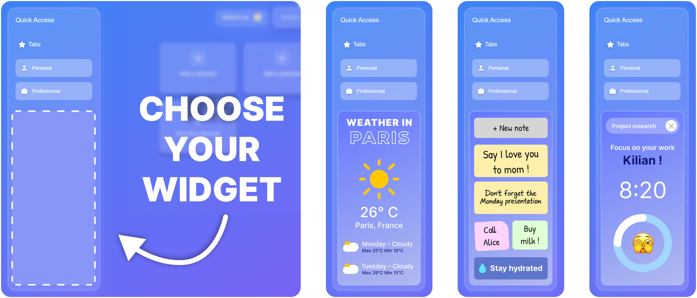

Welcome to your New Tab
A minimalist and productive space to start your browsing
Quick Access to Favorites
All your favorite sites just a click away
Instant Search
Search the web directly from your new tab

Customizable Widgets
Add useful widgets to your dashboard - weather, notes, timers, and more to boost your productivity
Fully Customizable
Adapt the appearance and features to your preferences